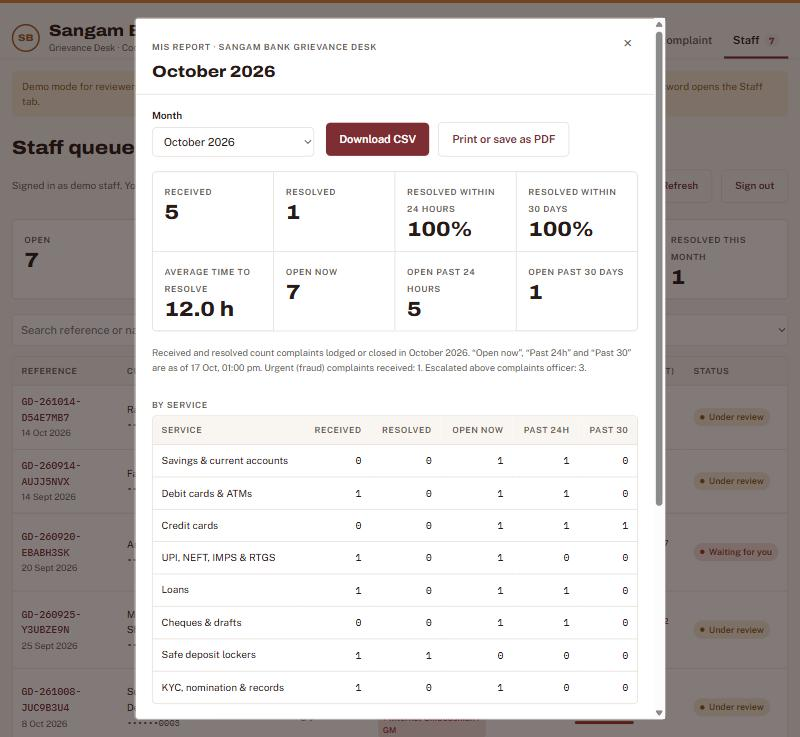

| Course | Product Management with AI, IIM Calcutta (Prof. Saravana Jaikumar) |
| Assignment | Capstone Project: Strategize, Build and Go-to-Market (deliverable 2 of 4) |
| Product | Grievance Desk, demo instance “Sangam Bank”. Live: https://connect2soniasuresh-ui.github.io/MyComplaintsSystem/ (add ?demo to explore every screen without an account) |
| Group | Group 5: Sonia, Chetana, Abhay, Gayatri, Padma Priya, Amir, Urmila |
| Date | November 2026 |
Grievance Desk has two customers. The buyer is a bank, and the person who feels the pain most is its Principal Nodal Officer, the officer RBI holds responsible for complaints. The end user is the bank's own customer, who needs to complain safely and know what is happening. The product only works if it wins both.
Evidence: RBI's Ombudsman received 13.34 lakh complaints in FY2024-25, up 13.6% in a year, and loans, cards, mobile banking and deposits make up about 80% of them. Card and internet fraud is 56% of all bank fraud cases by count. Only 37.8% of Indians aged 15+ can do online banking. Each of these findings maps to a feature we built (Section 10).
Honest status of our research. This analysis is built on published RBI and government data, on the regulations that shape the buyer's job, and on our product walkthroughs. Our 15 to 20 interviews with nodal officers and CEOs are scheduled in the execution plan (W2 to W4). Every claim below is tagged so readers can see what is proven and what we still need to validate: D published data, R regulation or rule, H team hypothesis to test in interviews.
| Source type | What we used | What it told us |
|---|---|---|
| Regulator data D | RBI Annual Report of the Ombudsman Scheme 2024-25; RBI Report on Trend and Progress of Banking in India 2024-25; RBI Annual Report 2024-25 (fraud data) | Complaint volume, categories and growth; number and tiers of UCBs; fraud mix |
| Government data D | Ministry of Finance notification on RRB amalgamation (May 2025); NSO Comprehensive Annual Modular Survey (CAMS) 2022-23 | Size of the RRB segment; digital skills of end customers |
| Regulations R | RBI Integrated Ombudsman Scheme 2021 (30-day rule); RBI directions on customer liability in unauthorised electronic transactions; grievance redressal directions for UCBs; DPDP Act 2023 | The buyer's legal job: reply within 30 days, name a nodal officer, protect data, act fast on fraud |
| Enforcement record D | RBI penalty orders on cooperative banks (for example, Panchsheel Mercantile Co-operative Bank, Surat, September 2025, for breaching customer-liability directions on unauthorised electronic transactions) | Non-compliance has real, public consequences for small banks |
| Product walkthroughs | Mini Project 2 and 3 prototype reviews; demo sessions run in the team | Which screens explain the value fastest (OTP refusal, 24-hour clock) |
| Primary interviews H | Planned: 15 to 20 interviews with UCB, SFB and RRB nodal officers and CEOs, plus 10 customer intercepts at branches (guide in Section 11) | To confirm or overturn the hypotheses marked H |
| Finding | Evidence | So what for Grievance Desk |
|---|---|---|
| Complaints are rising fast. 13,34,244 complaints under the RBI Integrated Ombudsman Scheme in FY2024-25, up 13.55% from 11,75,075 in FY2023-24. Disposal slipped from 95.1% to 93.1%. | D RBI Ombudsman report 2024-25 | Volume is outgrowing manual processes. Every complaint that reaches RBI is one the bank failed to close itself. |
| Banks are the main target. Banks drew 81.5% of complaints handled by RBI Ombudsman offices; NBFCs 14.8%. | D same | Banks first; NBFCs are a Year 2 adjacency. |
| Four categories dominate. Loans and advances 29.3%, credit cards 17.2%, mobile and electronic banking 16.9%, deposit accounts 16.8%. | D same | All four are among our 12 services. The issue list is weighted towards them. |
| Small UCBs have no RBI Ombudsman fallback. The scheme covers UCBs only with deposits of ₹50 crore or more. Complaints against UCBs at RBI were just 3,369 in FY2024-25 (about 1% of the total), down 11.3%. | D RBI, via Indian Cooperative | For customers of smaller UCBs, the bank's own desk is the only formal route, so it has to work. Low numbers at RBI likely reflect coverage and awareness, not happy customers H. |
| UCBs are consolidating under tighter rules. 1,457 UCBs at March 2025 (down from 1,926 in 2004). Seven mergers and eight licence cancellations in 2024-25. A four-tier regulatory framework since December 2022; 57.5% of UCBs are Tier 1. | D RBI Trend and Progress 2024-25 | Survivors are under pressure to look well run. Tier 2 and 3 banks (about 600) are big enough to pay and small enough to lack a CRM. |
| RRBs are now 28 large state banks. 43 RRBs merged into 28 from 1 May 2025, with 22,000+ branches in about 700 districts. | D Ministry of Finance | Fewer, larger RRBs mean bigger deals and one decision-maker per state: a strong second wave. |
| Fraud complaints are mostly digital. 23,953 bank fraud cases in FY2024-25; card and internet fraud was 13,516 of them (56%). | D RBI Annual Report 2024-25 | Fraud must jump the queue, and the customer must be told to block first. RBI's zero-liability window is only 3 working days. |
| Many customers are not confident online. Only 37.8% of people aged 15+ can do online banking; rural households trail urban ones on internet access (71% vs 87%). | D NSO CAMS 2022-23 | A 12-service form is hard for this group. They need a chat in their own words, plain language, and branch staff able to lodge on their behalf. |
| Breaches bring public penalties. RBI regularly publishes monetary penalties on cooperative banks, including for customer-liability and KYC lapses. | D RBI press releases | The nodal officer and CEO feel personal and reputational risk. Audit evidence is a buying driver. |
We segmented RBI-regulated lenders on five criteria and scored each from 1 (poor) to 5 (strong). Weights reflect what matters most for a young, founder-led company: pain and fit first, then how quickly we can sell.
| Segment (approx. count) | Pain (30%) | Product fit (25%) | Ability to pay (15%) | Speed to close (15%) | Reachability (15%) | Weighted score | Decision |
|---|---|---|---|---|---|---|---|
| UCBs, Tier 2 and 3 (~600) | 5 | 5 | 3 | 4 | 5 | 4.6 | Beachhead |
| UCBs, Tier 1 (~840, smallest) | 4 | 5 | 1 | 4 | 4 | 3.8 | Essential tier, via federations |
| Small finance banks (~11) | 4 | 4 | 4 | 3 | 3 | 3.7 | Second wave |
| RRBs (28, post-merger) | 4 | 4 | 4 | 2 | 3 | 3.6 | Second wave |
| Payments banks, fintechs | 3 | 3 | 4 | 4 | 3 | 3.3 | Opportunistic |
| NBFCs (~9,000) | 4 | 3 | 3 | 3 | 2 | 3.15 | Year 2 |
| Large public and private banks | 3 | 1 | 5 | 1 | 1 | 2.2 | Not targeted |
Counts: UCBs from RBI Trend and Progress 2024-25 (1,457 total, 57.5% Tier 1, so about 840 Tier 1 and about 620 Tier 2 to 4); RRBs from the Ministry of Finance; SFBs and NBFCs approximate. Scores are the team's judgement from the evidence in Section 3 and will be re-scored after interviews.
The bank buys, but its customers decide whether the desk is used. We segmented them by digital confidence and urgency, the two things that most change what they need from a complaint channel.
| Customer segment | Who they are | What they need | What we built for them |
|---|---|---|---|
| Fraud victims (urgent) | Someone who just lost money to a card, UPI or phishing scam. Anxious and racing the 3-day zero-liability window. | Be told what to do first; be taken seriously at once; not be phished again | Fraud issues auto-flagged urgent and routed to the Fraud cell; “block first, report in 3 days” guidance; AI catches fraud filed under the wrong category |
| Less confident, vernacular users | Semi-urban and rural customers, small traders, many older users. Use WhatsApp, not forms. 62% of adults can't bank online D. | Explain the problem in their own words and language; not have to pick from 50 issue types | AI Complaint Assistant replies in the customer's language and fills in the form; plain-English copy; branch staff can lodge for walk-ins |
| Digital-first payment users | Urban, UPI-heavy, often younger. Complain about failed or wrong transfers. | Speed, a reference number, status without calling | 2-minute form with UTR field; instant reference; self-service tracking |
| Borrowers and depositors | Home, gold and vehicle loan customers, FD holders, pensioners. Issues are slower but high value (EMIs, interest, documents). | Proof the bank is acting; a written trail; a route if the bank stalls | Timestamped history; “Waiting for you” replies on the same page; RBI Ombudsman route shown after Day 30 |
Design rule: design for the least confident customer and the most anxious one. If a rural fraud victim can lodge safely in two minutes, every other customer can too.
A composite built from the role's regulatory duties R and the segment profile D. Quotes are illustrative of the hypotheses we will test, not interview transcripts. They will be replaced with real quotes after W2 to W4.
Profile
Age 46. Principal Nodal Officer and Head of Customer Service at a Tier 3 urban cooperative bank in Pune: 28 branches, about 3.5 lakh customers, roughly 40 complaints a day across all channels, 4 people handling them part-time.
Background
Joined as a clerk 22 years ago and rose through branch operations. Confident with the core-banking system and Excel, cautious with new tech. His name and phone number are on the bank's website as nodal officer R, so escalations land on his desk personally. Reports to the CEO and presents to the board's Customer Service Committee every quarter.
A typical week
Collects complaint registers scanned by branches; reads the shared complaints mailbox; phones branch managers for updates; updates a master Excel sheet; chases fraud cases with the card team. Once a month he stays late to build the board report by hand.
Goals
Frustrations
| Dimension | What we believe | Evidence |
|---|---|---|
| Functional needs | One list of every complaint from every channel; a running clock per case; fraud first; a monthly summary for the board and RBI returns; an audit trail for inspectors | R 30-day rule, nodal officer duties; H channel mix |
| Motivations | Avoid personal blame; protect the bank's standing with RBI in a period of consolidation; be seen as modernising | D mergers, licence cancellations, penalties |
| Behaviours | Learns from peers, not ads: federation meetings, WhatsApp groups of cooperative-bank officers, vendor user meets, auditors. Prefers a demo to a brochure. Tests anything new on a few branches first. | H to confirm in interviews |
| Decision drivers (ranked) | 1. Regulatory safety (will it stand up to an inspector?) 2. Simplicity for branch staff 3. Data stays in India, nothing to install 4. Annual cost the board will approve, below one clerk's salary 5. A peer bank already uses it | H ranking to test with a card sort |
| Objections | “Our customers won't use a website.” “What if the AI gets it wrong?” “Will RBI accept this as our grievance system?” “What happens to our data if you shut down?” | H |
| Information sources | State UCB federation and NAFCUB, RBI circulars, cooperative-sector press, core-banking vendor, statutory and concurrent auditors, annual sector conferences | H |
| Persona | Role in the decision | What they care about | What wins them |
|---|---|---|---|
| Meera Deshpande, 54, CEO (economic buyer) | Signs the contract and takes it to the board | RBI standing, reputation, cost, board optics | “Past 24-hour target” and “Past 30 days” tiles at zero; a monthly report she can table at the board; a fee below one clerk's salary; a peer reference |
| Sachin More, 31, Complaints officer (daily user) | Must adopt it, or the bank goes back to Excel | Simplicity; not being blamed; less phone-chasing | One queue, urgent and oldest first; the full story of a case in one place; AI routing that sends cases to the right team |
| Compliance officer / internal auditor | Can veto | Evidence, data protection, DPDP | Timestamped history; logged contact reveals; confidential-data guard in the database |
| IT head / core-banking vendor | Can veto, or be a channel partner | No integration work, security | Hosted, nothing to install, Mumbai region, row-level security, strict CSP |
| Lakshmi Pawar, 52, bank customer (end user) | Decides whether the desk is used | Getting her money back; being heard; not being cheated twice | Chat in Marathi; told to block her card first; a reference number at once; “we will never ask for your OTP” |
Age 52. Runs a small tailoring business in a town near Satara. Savings account and a gold loan with the cooperative bank for 15 years. Uses WhatsApp and UPI on her phone, mostly in Marathi. Her son helps with anything “official”.
Moment of need: she got a call from “the bank” asking her to confirm a code, and ₹18,000 left her account. She is frightened and embarrassed, and she doesn't know whether to go to the branch, call, or write.
Needs
Composite persona built from fraud and digital-skills data D. To validate with branch intercepts.
| Stage | What Rajesh is doing | What he needs to move on | Our asset |
|---|---|---|---|
| Trigger | An RBI inspection finding, a customer escalation to the CEO, or a peer bank's story | A reason to act now | Federation workshop on the 30-day rule and DPDP; “complaint of the week” posts |
| Explore | Asks peers and the federation what others use | Proof it is built for banks like his | 3-minute demo video: OTP refusal and the 24-hour clock |
| Evaluate | Sees a demo branded with his bank's name; brings in IT and compliance | Security and regulatory confidence | Branded demo; security note; DPDP mapping; ?demo sandbox |
| Pilot | Runs 3 to 5 branches for 60 days | Visible results without risk | Free pilot with agreed success criteria; monthly report as the scorecard |
| Decide | CEO takes it to the board | A business case the board will approve | ROI one-pager; board-note template; pilot report |
| Expand | Rolls out to all branches and tells peers | Easy launch to customers | Customer launch kit (posters, QR codes, SMS); referral offer |
Lakshmi's journey today, with a paper register and email, and with Grievance Desk:
| Step | Today | Feeling | With Grievance Desk |
|---|---|---|---|
| Something goes wrong | Not sure where to complain: branch, phone or letter | Panic | “Lodge a complaint” link on the bank website, passbook and branch QR code |
| Explain it | Writes a letter or tells a clerk; may include her OTP or card number | Confused, exposed | Chats in Marathi; AI fills in the form; any OTP or card number is blocked before it is sent |
| First response | No acknowledgement, or an entry in a register she never sees | Ignored | Reference number at once and a reply-by date; fraud flagged urgent with block-first advice |
| Waiting | Visits or calls the branch to ask for status | Frustrated | Tracks online with reference and mobile; replies on the same page if the bank asks |
| Resolution | Hears back late, or not at all | Distrust | Officer's update shown in the history; RBI Ombudsman route shown if she disagrees or Day 30 passes |
Each feature in the working product traces back to an insight. A reviewer can see every one in the live site (?demo for the staff screens).
| Insight | Feature built | Where to see it |
|---|---|---|
| Rajesh learns about late cases only when they escalate | A 24-hour resolution clock on every case (RBI's 30 days as the outer limit); “Past 24-hour target” and “Past 30 days” tiles; auto-escalation after 4 hours without action, then at 12 and 20 hours | Staff tab: tiles, queue, case history |
| 56% of fraud cases are card and internet fraud, and the zero-liability window is 3 days | Fraud issues flagged urgent; block-first guidance; Fraud cell routing; ₹1 lakh+ fraud goes to the Principal Nodal Officer | Lodge tab (choose “Unauthorised transaction”); Staff queue |
| Customers overshare secrets, and fraudsters pose as staff | Confidential-data guard in the browser and the database; staff messages asking for secrets blocked; no uploads | Type “OTP 123456” in any box |
| 62% of adults can't bank online; many prefer their own language | AI Complaint Assistant: describe it in your own words; replies in the customer's language | Lodge tab → “Describe it in a chat” (live site) |
| “Where is my complaint?” calls waste branch time | Reference number plus mobile tracking; “Waiting for you” replies | Track tab |
| Inspectors want evidence; DPDP requires data minimisation | Timestamped history; masked contacts with logged reveals; last 4 digits only; India hosting | Case detail → “Show contact details” |
| Complaints reach the wrong team and sit for days | Rules route on lodging; AI re-routes once with a reason and risk rating; staff can override | Case detail → Routing and escalation |
| New for the capstone: Rajesh loses an evening a month building the board report | Monthly report: received, resolved, % within 24 hours and 30 days, average time, open past 24 hours and past 30 days, by service and by team; CSV download with masked contacts; print to PDF | Staff tab → “Monthly report” |
| Reviewers and prospects need to try it without an account | ?demo mode with sample cases; nothing saved | Live site with ?demo |

| # | Hypothesis | Test | We are right if… |
|---|---|---|---|
| 1 | Tier 2 and 3 UCBs track complaints on paper, email or Excel, with no live view of complaint deadlines | Interviews with 10+ nodal officers | ≥ 7 of 10 have no system with a per-case clock |
| 2 | Regulatory safety outranks price as a decision driver | Card sort of 6 drivers in interviews | Regulatory safety ranked in the top 2 by most |
| 3 | ₹30,000 a month is within a 25-branch UCB's approval limit | Van Westendorp price questions; ask who signs at what amount | Acceptable range includes ₹25–35k a month |
| 4 | The monthly board report takes at least half a day by hand | Ask them to walk us through their last report | Median ≥ 4 hours |
| 5 | Customers will use an online desk if branches promote it | 10 branch intercepts; then share of complaints lodged online during the pilot | ≥ 60% online by the end of the pilot |
| 6 | Customers trust a chat assistant more when it refuses their OTP | Show the OTP refusal to customers in intercepts | Most say it makes them trust the bank more |
| 7 | A 24-hour resolution target is realistic for most complaints at a small bank | Ask officers how long a typical case takes; then pilot data from the monthly report | ≥ 70% resolved within 24 hours by the end of the pilot |
Recruit through state UCB federations, the team's banking contacts and LinkedIn: 10 to 12 UCB nodal officers or CEOs, 3 to 4 SFB or RRB contacts, and 10 customer intercepts at two branches. Each interview is logged in the table below and synthesised in W4 to update this document (persona v2).
| # | Bank type and size | Role | Date | Interviewer | Top pain (their words) | Hypotheses confirmed or overturned |
|---|---|---|---|---|---|---|
| 1 | ||||||
| 2 | ||||||
| 3 |
Some figures are taken from press reports of RBI publications. Exact tables should be checked against the RBI originals before external use.